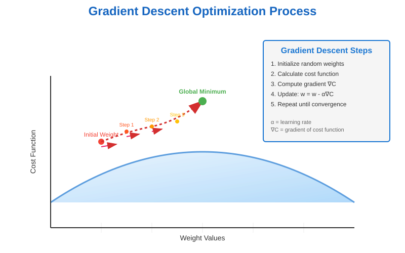
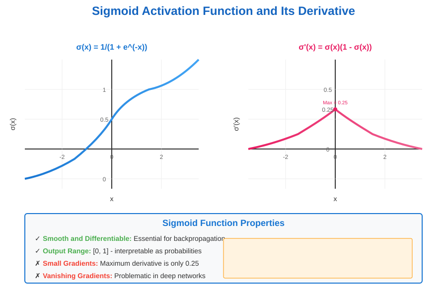
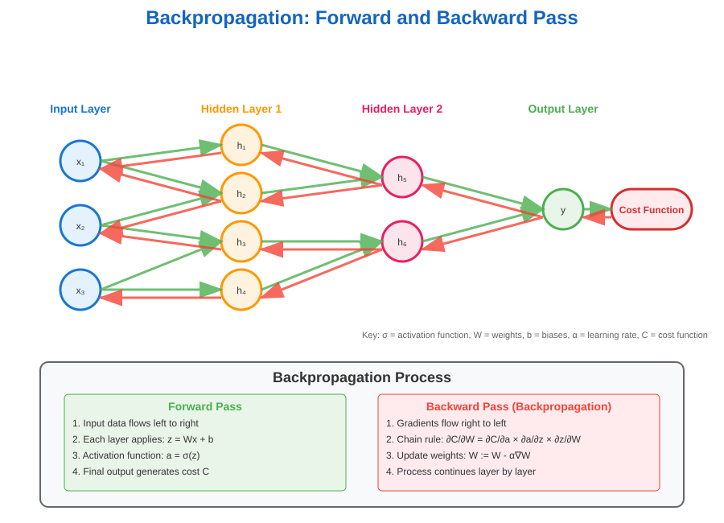
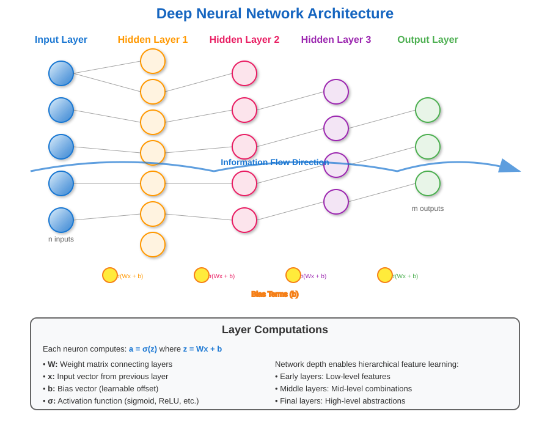
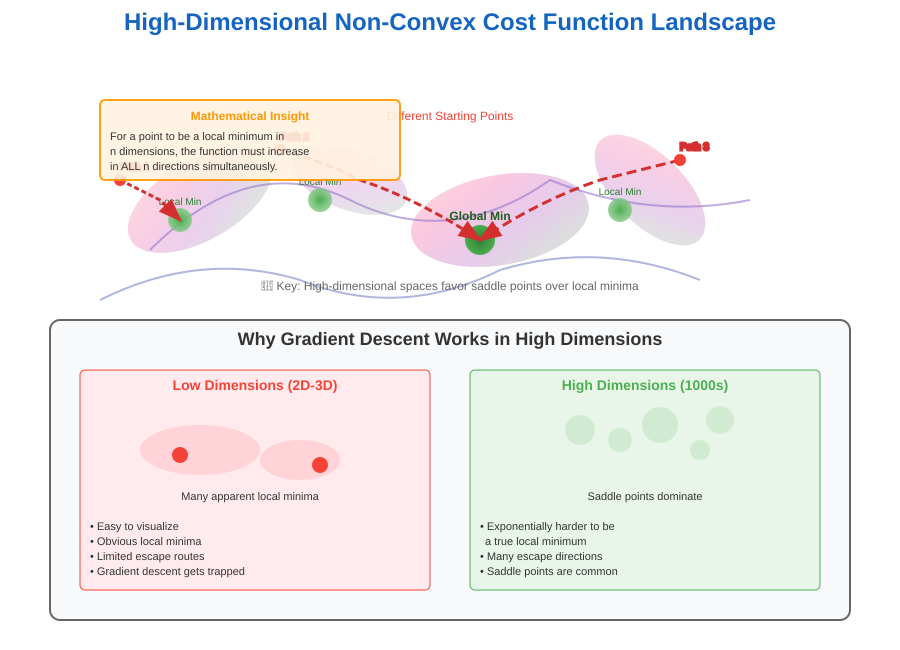

Computing Gradient using Backpropagation
🧭 Quick Navigation
- Gradient Descent Overview
- Sigmoid Activation Function
- Computing Gradients with Backpropagation
- Neural Network Training Steps
- Why Gradient Descent Works
- Historical Context
- References & Further Reading
🎯 Gradient Descent Overview
Gradient descent is a fundamental optimization algorithm used to minimize cost functions in neural networks. Understanding how to apply gradient descent to deep neural networks is crucial for effective model training.

What is Gradient Descent?
Gradient descent is an optimization algorithm used to find the values of parameters (coefficients) of a function that minimizes a cost function. You can visualize this process as navigating a large bowl-shaped surface where:
- The bowl represents the cost function landscape
- A random position on the surface corresponds to the current parameter values
- The bottom of the bowl represents the optimal parameters with minimum cost
- The goal is to iteratively move toward the bottom by following the steepest descent
Core Principles
The gradient measures how changes to weights and biases affect the cost function value. We move in the direction opposite to the gradient because our objective is to minimize the cost function.
Gradient Descent Algorithm Steps
Step 1: Initialize Parameters - Set weights to random values and calculate initial cost function
Step 2: Calculate Gradient - Compute the gradient to determine the direction for parameter updates - The gradient indicates both direction and magnitude of steepest ascent
Step 3: Update Parameters - Adjust weights using the gradient information
Step 4: Evaluate New Cost - Use updated weights for prediction and calculate new cost
Step 5: Iterate Until Convergence - Repeat steps 2-4 until cost reduction becomes negligible
📈 Sigmoid Activation Function
The choice of activation function significantly impacts the backpropagation process. While early perceptrons used threshold functions, the sigmoid function offers crucial advantages for gradient-based optimization.

Why Sigmoid Over Threshold?
Smoothness and Differentiability:
- Sigmoid functions are smooth and differentiable everywhere
- Threshold function derivatives are either zero or undefined
- This differentiability is essential for computing gradients
Sigmoid Function Properties
Range and Output: - Sigmoid output ranges from 0 to 1 - Derivative ranges from 0 to 0.5
Mathematical Form:
Derivative:
Limitations in Deep Networks
Why Sigmoid is Problematic in Hidden Layers:
- Small Derivative Values: Maximum derivative is only 0.5
- Vanishing Gradient Problem: Gradients become exponentially small in deep networks
- Saturation Issues: Function saturates at extreme values, leading to nearly zero gradients
This small derivative range is one of the primary reasons modern deep networks favor activation functions like ReLU over sigmoid in hidden layers.
🔄 Computing Gradients with Backpropagation
Backpropagation is the method used to compute gradients of the loss function with respect to all weights in the network. It efficiently applies the chain rule to compute gradients layer by layer.

The Chain Rule Foundation
Backpropagation uses the chain rule from calculus to compute gradients efficiently. The intuition is simpler than the actual implementation:
Forward Pass Intuition: - Neural network outputs \(a_1, a_2, ..., a_m\) are fed into the quadratic cost function - We can compute partial derivatives of the cost function with respect to these outputs
Backward Pass Process: - These \(m\) outputs depend on weights in the previous layer - Each output \(a_i\) is a function of weights and biases feeding into the \(i^{th}\) perceptron - We compute how changes in weights/biases affect each output
Mathematical Framework
Partial Derivative Definition: The partial derivative of a function with respect to one variable, with others held constant, tells us:
- Direction: Whether to increase or decrease the parameter
- Magnitude: How much the parameter should change
- Optimization Goal: How to reach the global minimum
Layer-by-Layer Computation
The Backpropagation Process:
- Output Layer: Compute gradients directly from cost function
- Hidden Layers: Use chain rule to compute gradients based on the layer above
- Weight Updates: Apply computed gradients to update all network parameters
Key Requirement: The activation function must be differentiable (why sigmoid works but threshold doesn't)
Visual Understanding
The network architecture shows how information flows: - Forward: Input → Hidden Layers → Output → Cost - Backward: Cost Gradient → Output Layer → Hidden Layers → Input Layer

🏗️ Neural Network Training Steps
Creating and training neural networks involves a systematic approach combining architecture design, forward propagation, and backpropagation optimization.
Complete Training Pipeline
Step 1: Network Architecture Design
- Layer Configuration: Decide number of layers and neurons per layer
- Activation Functions: Choose appropriate activation functions for each layer
- Output Layer: Configure output neurons based on problem type (classification/regression)
Step 2: Weight Initialization - Random Initialization: Set weights to small random values near zero - Avoid Zero Initialization: Prevents symmetry breaking issues - Initialization Range: Typically between 0 and 1, or small values around zero
Step 3: Forward Propagation Implementation - Input Processing: Feed input vectors through the network - Layer-wise Computation: Apply linear transformations and activation functions - Cost Calculation: Evaluate how well the network fits training data
Step 4: Backpropagation Implementation - Gradient Computation: Calculate gradients for all parameters - Chain Rule Application: Propagate gradients backward through layers - Error Attribution: Determine each parameter's contribution to the total error
Step 5: Parameter Optimization - Gradient Descent Application: Update weights using computed gradients - Learning Rate: Control the step size for parameter updates - Cost Minimization: Reduce the cost function value iteratively
Step 6: Training Loop - Iteration: Repeat steps 3-5 until convergence - Convergence Criteria: Stop when cost reduction becomes negligible - Monitoring: Track training progress and prevent overfitting
Training Flow Diagram
The complete training process can be visualized as a continuous loop of forward propagation, cost evaluation, backpropagation, and parameter updates.
🌄 Why Gradient Descent Works
Understanding why gradient descent succeeds on non-convex functions in high-dimensional spaces is crucial for deep learning intuition.

The Non-Convex Challenge
Low-Dimensional Intuition: In low dimensions, non-convex functions appear to have many local minima where gradient descent could get trapped.
High-Dimensional Reality: In high dimensions, gradient descent surprisingly works well, though the exact reasons remain an active area of research.
Proposed Explanations
Explanation 1: Near-Convex Behavior
- Local Convexity: Functions may be closer to convex than they appear
- Large Convex Regions: Substantial portions of the parameter space might be convex
- Practical Implication: Gradient descent operates in effectively convex regions
Explanation 2: High-Dimensional Local Minima
- Stringent Requirements: Being a local minimum requires the function to increase in ALL directions
- Exponential Difficulty: With thousands of parameters, satisfying this condition becomes exponentially harder
- Escape Routes: Multiple directions typically exist to escape potential local minima
Explanation 3: Initialization Dependence
- Different Solutions: Starting points significantly affect final solutions
- Non-Uniqueness: Unlike convex functions, non-convex optimization lacks unique global solutions
- Practical Strategy: Multiple random initializations can explore different solution spaces
Computational Advantages
Historical Perspective:
- 1980s Limitations: Computers lacked sufficient power for large neural networks
- Small Network Alternatives: Support Vector Machines and ensemble methods were superior for small networks
- Modern Capability: Current computing power enables truly massive neural networks
Scale-Dependent Performance: The effectiveness of neural networks emerges primarily with large-scale architectures that were computationally infeasible in earlier decades.
🧠 Historical Context
Neural Networks Evolution
Early Development (1980s): - Neural networks gained initial popularity - Limited by computational constraints - Focus on small network architectures
The AI Winter: - Better Alternatives: SVMs and ensemble methods outperformed small neural networks - Computational Barriers: Hardware couldn't support deep architectures - Research Decline: Interest shifted to other machine learning approaches
Modern Renaissance: - Hardware Advances: GPUs and specialized processors enable large-scale training - Big Data: Massive datasets provide sufficient training examples - Architectural Innovations: Deep networks with millions/billions of parameters
Neuroscience Connection Caution
Philosophical Perspective: Early neural network research emphasized biological plausibility, sometimes at the expense of practical performance.
Key Insights:
- Loose Parallels: Connections between artificial and biological neural networks are tenuous at best
- Historical Constraint: Overemphasis on biological realism initially hindered gradient descent adoption
- Modern Approach: Focus on computational effectiveness rather than biological similarity
Research Evolution: The field has moved from strict biomimicry toward engineered solutions optimized for specific computational tasks.
📚 References & Further Reading
Core Papers & Resources
- Backpropagation Algorithm - Original Paper
-
Foundational work on error backpropagation in neural networks
-
Comprehensive coverage of gradient-based optimization
-
Neural Networks for Pattern Recognition - Christopher Bishop
-
Classic textbook covering backpropagation mathematics
-
Survey of modern gradient descent variants
-
Insights into high-dimensional optimization landscapes
-
Analysis of neural network loss function geometry
-
CS231n: Convolutional Neural Networks for Visual Recognition
-
Stanford course materials on backpropagation implementation
- Interactive explanations of neural network concepts
Interactive Learning Resources
 TensorFlow Automatic Differentiation Tutorial
TensorFlow Automatic Differentiation Tutorial
Pre-trained Neural Network Models